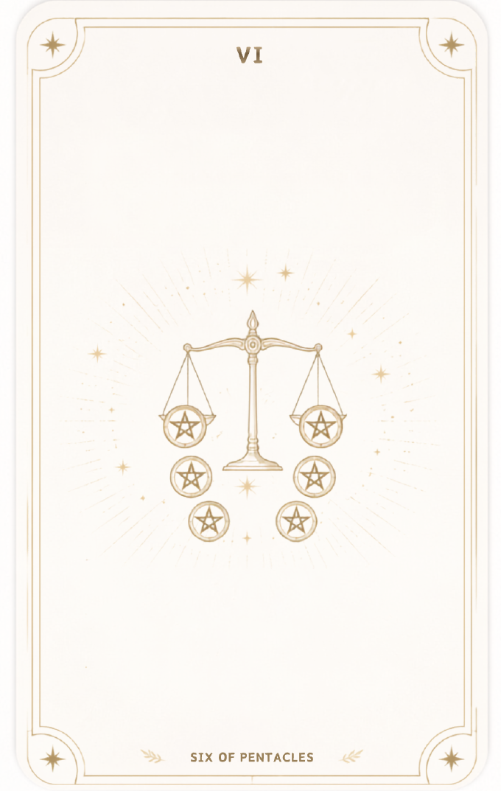
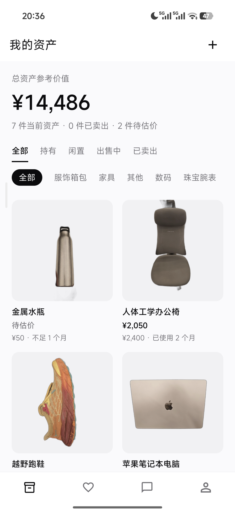

一个真的在劝住你的 Agent
Agent 记得用户拥有过什么，也记得之前纠结过什么。它给出的不是泛泛建议，而是基于个人事实的提醒。
星币六把你已经拥有的东西、你正在犹豫的商品，以及真正想实现的心愿放进同一段对话里。它不替你决定，只让每一次消费冲动都有机会被看见。


逆位：资源失衡、过度给予与无序支出。
正位：财富平衡、收获回馈与良性流动。
翻转：把冲动消费逆转成心愿资金。
情绪消费正在年轻人群中加速渗透，但现有工具大多停留在事后记账和预算提醒。星币六瞄准的是下单前那个最真实的纠结瞬间。
当用户想买一件东西时，可以把照片、链接或文字描述发给 Agent。星币六结合资产库和历史对话，给出基于事实的提醒，而不是命令式结论。
支持图片、链接和文字描述，像问朋友一样开始一段对话。
结合资产库、闲置状态、购买价格和过往纠结记录。
提醒用户过去买过什么、后来是否常用、有没有已经闲置。
不买金额进入心愿资金；冷静后未继续购买，也会被温和地记为一次克制。
星币六的核心不是评判消费，而是把“忍住没买”的价值变得具体、可见、可积累。
Agent 记得用户拥有过什么，也记得之前纠结过什么。它给出的不是泛泛建议，而是基于个人事实的提醒。
每一次选择不买，金额都会进入指定心愿。克制不再只是少花钱，而是离旅行、门票或真正想要的东西更近。
用户记录持有、闲置和已卖出的物品，资产页展示每日二手市场参考价，让资产清单保持鲜活。
页面视觉延续移动端 UI 的克制风格：大面积白色与浅灰、近黑文字、少量金色塔罗线条。资产照片和金额信息优先出现，装饰只服务于“财富流动”的叙事。
前端负责顺滑的移动端交互，Supabase 承担用户和数据底座，自定义 API 连接识别、估价与流式对话能力。
星币六不替用户做决定，只是在按下购买之前，把“已经拥有的东西”和“真正想要的东西”放在眼前。愿每一份克制，都通向你的心愿。